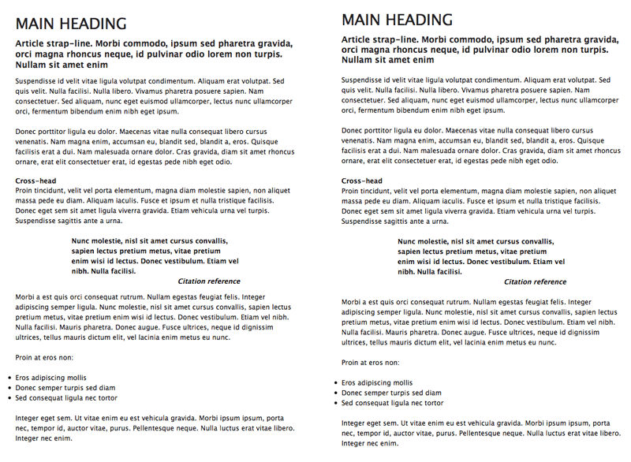
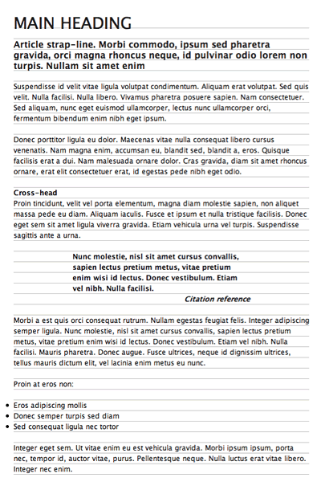

Setting Web type to a baseline grid
Introduction
This article covers the basics of baseline grids—defined grid areas within which content is placed—and how they can be applied effectively to the web medium. In print, baseline grids are almost mandatory. They ensure the bottom of each line of text—its baseline—aligns with a vertical grid, akin to writing on a ruled piece of paper. With books, this means text is always in the same position on the page. This ensures the gaps between lines of text aren’t “filled” with content showing through from the reverse of any page, thereby making the text easier to read. This advantage isn’t relevant for Web design, but the other major advantage—maintaining a vertical rhythm—is.
Why you should use a baseline grid
Historically, Web designers have set text in an arbitrary and scrappy manner. Margins below text elements are often set equally for every element, regardless of their size, and scant attention is paid to leading, even though the line-height attribute provides scope for defining this typographic control online.
However, in the same way regular rhythm in music helps people keep track, a regular rhythm in type makes things easier for whoever’s experiencing the content. Assumptions can be made—often subconsciously—regarding where a piece of content is going to be, purely on the basis of the rhythm. Searching and disorientation are both reduced, and the speed in which content can be accessed and digested is increased. Figure 1, below, shows a comparison of a page with arbitrary values with one that has considered vertical rhythm. The difference is subtle, but the image with text aligned to a baseline grid is neater and easier to read.
Figure 1: A page with arbitrary leading values (left) versus text set to a baseline grid (right)
Getting started
First, you need some content to style. Below is a code block that includes a number of typical typographic elements, structured in a semantic manner. There are three levels of headings (for the main title, the strap-line and cross-heads), some paragraphs, a blockquote (for a pull-quote) and a list. Note that the lines are truncated, to make the structure more obvious; you can download the original HTML document here. The type elements are housed within a “wrapper” div, to define a width for the page’s content.
<div id="wrapper">
<h1>Main heading</h1>
<h2>Article strap-line. [...]</h2>
<p>Suspendisse id [...].</p>
<p>Donec porttitor [...].</p>
<h3>Cross-head</h3>
<p>Proin tincidunt [...]</p>
<blockquote>
<p>Nunc molestie [...]</p>
<p><cite>Citation reference</cite></p>
</blockquote>
<p>Morbi a [...]</p>
<p>Proin at eros non:</p>
<ul>
<li>Eros adipiscing mollis</li>
<li>Donec semper turpis sed diam</li>
<li>Sed consequat ligula nec tortor</li>
</ul>
<p>Integer eget [...]</p>
</div>
Next, a decision needs to be made regarding the underlying unit height of the baseline grid, based around a value in pixels. With comfortable Web text typically being sized between 11px and 13px (or equivalent values in ems), a vertical unit of around 18px is suitable. This slightly loose leading ensures there’s a little room to breathe between lines of copy and makes the content easier to read for users.
This rhythm of 18px needs to be maintained throughout the entire page, via careful setting of line-heights and margin values. This is easiest to explain by using pixels as the unit for font-sizing, so I’ll do this first. Once the basic methodology has been explored, I’ll then rework the CSS and size the fonts using ems, which, unlike pixel-sized text, can be resized using IE's standard text-sizing controls, for version 6 and below. (Opera, Safari and Firefox, of course, are happy to resize text defined in any unit, and IE 7 also has similar zooming capabilities.)
Defining page defaults
Everything else within this article is CSS-based. Prior to setting property values for text elements, page defaults need styling. I will use the universal selector (*) to remove padding and margins from all elements, and then define a default font stack and color value using a body rule. Within the body rule, I also define the baseline grid unit height via the line-height property. Then, I style the “wrapper” div by setting width and margin values for the #wrapper rule.
* {
padding: 0;
margin: 0;
}
body {
font-family: 'Lucida Grande', 'Lucida Sans Unicode', Lucida, Arial, Helvetica, sans-serif;
color: #111111;
line-height: 18px;
}
#wrapper {
width: 500px;
margin: 36px auto;
}
Styling text elements
With text elements, the entire amount of space they take up needs to be equal to or a multiple of the line-height value, including padding and margins, if applied. Therefore, in the following code block, you’ll see that the majority of the margin-bottom values are equal to 18px, the line-height value. In the case of the h3 element, the negative margin value “pulls” subsequent content up, so there’s no gap under it.
h1 {
font-size: 27px;
font-weight: normal;
text-transform: uppercase;
margin-bottom: 18px;
}
h2 {
font-size: 15px;
margin-bottom: 18px;
}
h3 {
font-size: 12px;
margin-bottom: -18px;
}
p, ul {
font-size: 12px;
margin: 18px 0;
}
For the blockquote element (for the pull-quote) and content within, three rules are required. The first, for the blockquote itself, sets text within the pull-quote to bold and adds some padding to its left and right sides, to make the text stand out from the body copy. The blockquote p rule removes margins from within the blockquote, otherwise there’d be a gap between the quote and citation, making the relationship between the two less obvious. The cite element is set to display as a block element, so it stretches to fill the paragraph that contains it, and the text is aligned right—a common standard with pull-quote citations. This helps differentiate the citation from the quote body.
blockquote {
font-weight: bold;
padding: 0 100px;
}
blockquote p {
margin: 0;
}
cite {
text-align: right;
display: block;
}
The completed page is shown in Figure 2.

Figure 2: The complete web page, with vertical rhythm carefully set using pixel values.
Using ems to size text
As mentioned earlier, sizing text in pixels remains problematic, due to Internet Explorer 6 still being heavily used, and because of legacy text-sizing controls remaining in Internet Explorer 7. Even though an Opera-like page zoom is available in IE7, it’s likely that many users will stick to old methods, which don’t enable text sized in pixels to be zoomed.
An alternative is to use ems. By setting the page’s overall font-size value to 62.5% in the body rule, text can be sized in ems using a value a tenth of the target pixel size. In other words, 1.0em equates to 10px, and 2.4em equates to 24px. This is only true for browsers using default settings (to make sure, you should use some kind of CSS reset), but it’s nonetheless a good method for retaining control over font sizes and also offering flexibility for scaling text.
However, if the text is to scale and retain the vertical rhythm, margin values and line-height must now be defined in ems also; otherwise, the rhythm will break as soon as the text is zoomed. First, then, I’ll amend the body rule, adding the font-size value mentioned earlier and changing the line-height value to 1.8em.
body {
font-size: 62.5%;
font-family: 'Lucida Grande', 'Lucida Sans Unicode', Lucida, Arial, Helvetica, sans-serif;
color: #111111;
line-height: 1.8em;
}
The font-size values for the text elements should be changed according to the ratio mentioned earlier—this is done by dividing by 10 and amending the units from px to em.
Margins are a little more complex. With 1em equating to the font size of the current unit, margin values are calculated by dividing the line-height value from the body rule by the font-size value in each case. Take, for example, the h1 rule:
h1 {
font-size: 2.7em;
font-weight: normal;
text-transform: uppercase;
margin-bottom: 0.666666em;
}
With a font-size value of 2.7em (equating to 27px), a margin-bottom value of 1em would place a margin equivalent to 27px underneath the h1 element. By dividing the line-height value of 1.8 by the font-size value of 2.7, we get the value 0.666666, and two-thirds of 2.7em is 1.8em—the same as the line-height value. (Read that again—it will make sense after a couple of run throughs, if it doesn't already.)
Using this methodology, margin values can be defined for the other text elements. For the h2 element, with a font-size of 1.5em, the margin-bottom value is 1.8/1.5em, which is 1.2em. For elements with a font-size of 1.2em, the margin values are 1.8/1.2em, which is 1.5em. Again, the h3 rule has a negative bottom margin, to “pull” subsequent content up, but its value still adheres to the grid.
h2 {
font-size: 1.5em;
margin-bottom: 1.2em;
}
h3 {
font-size: 1.2em;
margin-bottom: -1.5em;
}
p, ul {
font-size: 1.2em;
margin: 1.5em 0;
}
Final thoughts
The example documents are available for download here, and the ems-based one shows a few additional changes. The width for the #wrapper rule is defined in ems, as is the blockquote rule’s padding value. This means these settings will scale as the page is zoomed, so the entire page retains its ratios, rather than just the text getting bigger.
However, perhaps the most important change is the addition of a background image to the “wrapper” div. This GIF is an 18 x 20 image with a single-pixel line at its foot. When tiled, this shows the baseline grid, making the page look like lined paper—see Figure 3, below. This is a good device to use when initially working on pages with a baseline grid, to ensure the various elements correctly adhere to it. If things move out of synch part-way down, start checking margin values for elements further up the page.
Figure 3: Using a tiled background to make the baseline grid visible
One final tip is for Internet Explorer only. In this example, margins and padding were removed from all elements, meaning list-item content is aligned with body copy, resulting in hanging bullets. From a typographical standpoint, this is actually more correct, but with most software keen to place content within boxes, the art of hanging bullets (and punctuation) has been somewhat lost.
Internet Explorer, even with version 7, typically doesn’t display content outside of the parent box, and so it doesn’t show the bullet points in this page. However, by adding the following rule, which positions unordered lists in a relative fashion, you can add padding to the left and then “pull” the lists left by the same amount (via the negative left value), allowing the bullets to make a welcome return:
ul {
padding-left: 1.5em;
position: relative;
left: -1.5em;
}
Note that this rule doesn’t affect Opera, Safari, and Firefox, but as it’s a rule specifically for Internet Explorer, it should nonetheless be applied using a conditional comment:
<!--[if lte IE 7]> <link rel="stylesheet" type="text/css" href="ie-7-hacks.css" media="screen" /> <![endif]-->
You can find more about conditional comments in a dedicated dev.opera.com article.
This article is licensed under a Creative Commons Attribution, Non Commercial - Share Alike 2.5 license.
Comments
The forum archive of this article is still available on My Opera.
No new comments accepted.